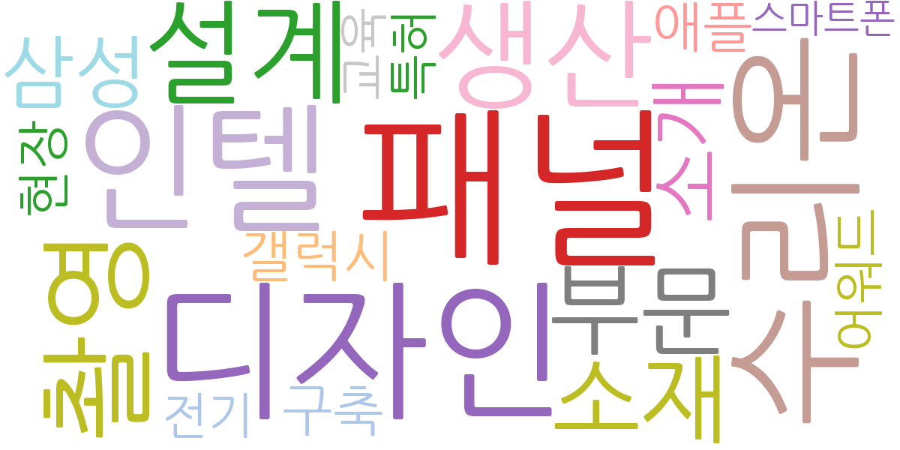
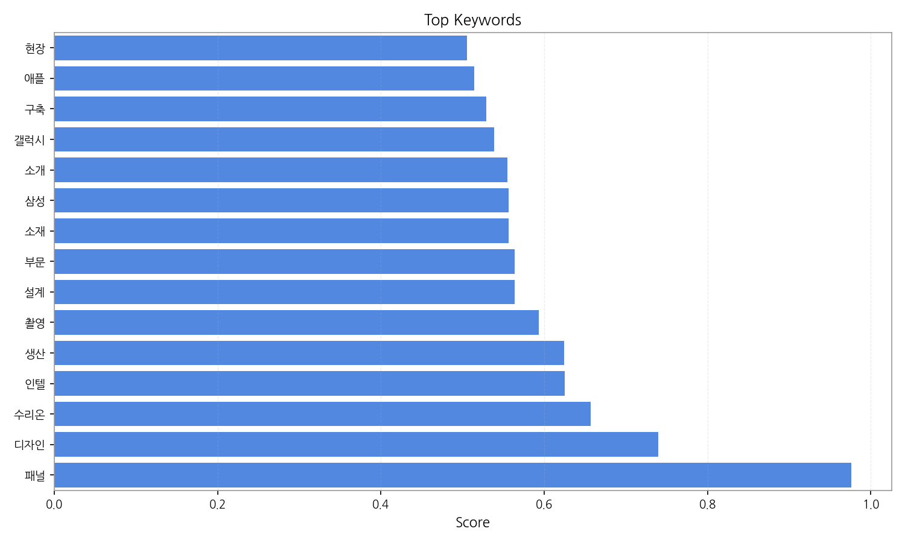
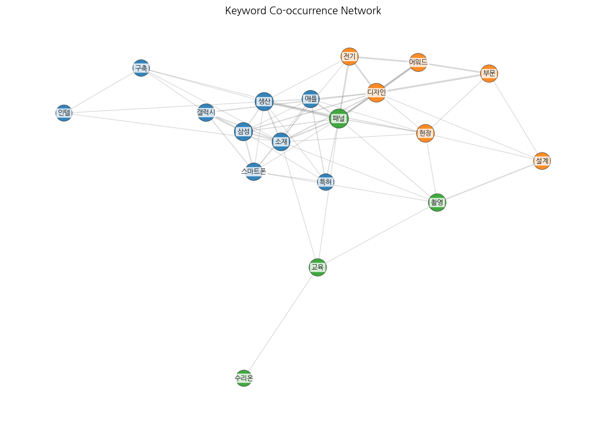
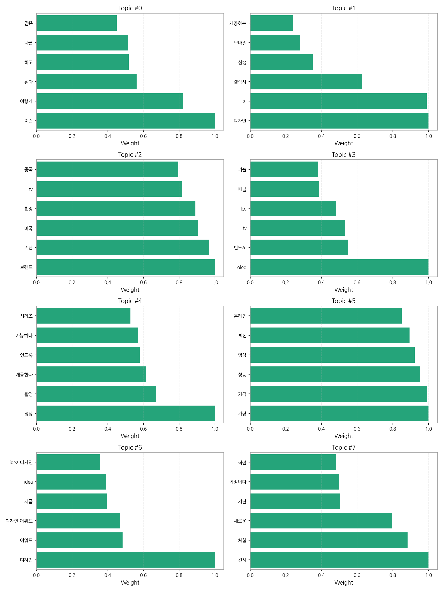
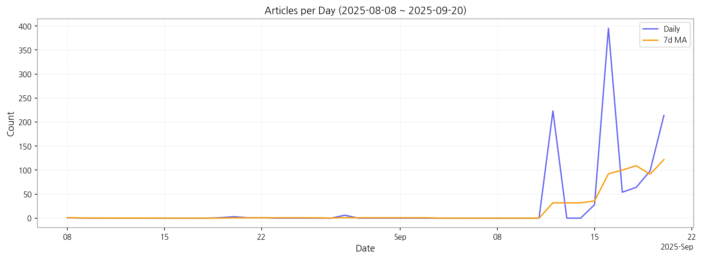

1) 상위 토픽을 3~5개 주제로 묶어 핵심 맥락 설명(2~3문장)
제공된 데이터는 크게 세 가지 주제로 묶을 수 있습니다. 첫째, 최신 기술 트렌드는 AI 기반 디자인, OLED/LCD 등 디스플레이 기술, 그리고 고성능 영상 촬영 기술에 대한 기사들이 주를 이룹니다. 둘째, 제품 출시 및 마케팅은 삼성 갤럭시 등 특정 브랜드의 신제품 출시와 관련된 소식과 디자인 어워드 수상 등의 내용을 다룹니다. 마지막으로 시장 동향 및 경쟁은 미국, 중국 등 주요 국가 시장에서의 브랜드 경쟁, 제품 가격 및 성능 비교 등의 기사들이 포함됩니다. 이러한 세 가지 주제는 서로 밀접하게 연관되어 있으며, 기술 발전, 제품 출시, 그리고 시장 경쟁이라는 맥락에서 한국 뉴스의 주요 관심사를 반영합니다.
2) 최근 변화/스파이크가 있으면 2문장으로 짚기
9월 12일부터 9월 20일 사이에 기사 수가 급증하는 현상이 나타났습니다. 특히 9월 16일에는 395건의 기사가 발생하여, 이전 기간 대비 매우 큰 증가세를 보였는데, 이는 특정 제품 출시 또는 이벤트와 관련이 있을 가능성이 높습니다.
3) 실무 인사이트 3가지 bullet(구체적 액션)

| Rank | Keyword | Score |
|---|---|---|
| 1 | 패널 | 0.976 |
| 2 | 디자인 | 0.739 |
| 3 | 수리온 | 0.657 |
| 4 | 인텔 | 0.625 |
| 5 | 생산 | 0.625 |
| 6 | 촬영 | 0.593 |
| 7 | 설계 | 0.564 |
| 8 | 부문 | 0.564 |
| 9 | 소재 | 0.556 |
| 10 | 삼성 | 0.556 |
| 11 | 소개 | 0.555 |
| 12 | 갤럭시 | 0.539 |
| 13 | 구축 | 0.529 |
| 14 | 애플 | 0.514 |
| 15 | 현장 | 0.505 |




1) 상위 토픽을 3~5개 주제로 묶어 핵심 맥락 설명(2~3문장)
제공된 데이터는 크게 세 가지 주제로 묶을 수 있습니다. 첫째, 최신 기술 트렌드는 AI 기반 디자인, OLED/LCD 등 디스플레이 기술, 그리고 고성능 영상 촬영 기술에 대한 기사들이 주를 이룹니다. 둘째, 제품 출시 및 마케팅은 삼성 갤럭시 등 특정 브랜드의 신제품 출시와 관련된 소식과 디자인 어워드 수상 등의 내용을 다룹니다. 마지막으로 시장 동향 및 경쟁은 미국, 중국 등 주요 국가 시장에서의 브랜드 경쟁, 제품 가격 및 성능 비교 등의 기사들이 포함됩니다. 이러한 세 가지 주제는 서로 밀접하게 연관되어 있으며, 기술 발전, 제품 출시, 그리고 시장 경쟁이라는 맥락에서 한국 뉴스의 주요 관심사를 반영합니다.
2) 최근 변화/스파이크가 있으면 2문장으로 짚기
9월 12일부터 9월 20일 사이에 기사 수가 급증하는 현상이 나타났습니다. 특히 9월 16일에는 395건의 기사가 발생하여, 이전 기간 대비 매우 큰 증가세를 보였는데, 이는 특정 제품 출시 또는 이벤트와 관련이 있을 가능성이 높습니다.
3) 실무 인사이트 3가지 bullet(구체적 액션)
| Idea | Target | Value Prop | Score |
|---|---|---|---|
| 디스플레이 패널 품질 관리 플랫폼 (KR) | 한국 내 디스플레이 패널 제조 기업 (대기업 및 중견기업), 품질 관리 부서, 생산 관리 부서 | AI 기반 자동화된 품질 검사 시스템으로 불량률 감소 및 생산성 향상. 경쟁사 대비 저렴한 구독형 서비스 제공으로 초기 투자 부담 완화. 실시간 데이터 분석 및 보고 기능 제공으로 효율적인 품질 관리 지원. 차별화 포인트는 AI 기반의 고도화된 이미지 분석 기술을 통해 미세한 결함까지 정확하게 검출하는 것입니다. | 4.50 |
| 모빌리티 디스플레이 통합 관리 서비스 (KR) | 한국 내 모빌리티 기업 (자율주행차, 전기차 제조사), 차량 관리 부서, IT 관리 부서 | 모빌리티 디스플레이 통합 관리 플랫폼 제공. 다양한 디스플레이 기기의 원격 모니터링 및 진단 기능 제공. 예측 정비 및 효율적인 유지보수 지원. 운영 효율 향상 및 안전사고 예방. 차별화 포인트는 실시간 디스플레이 상태 분석을 통해 예측 정비를 제공하여 운영 중단 시간을 최소화하는 것입니다. | 4.20 |
| 스마트 사이니지 광고 플랫폼 (JP) | 일본 내 스마트 사이니지 운영 기업, 광고 대행사, 대형 유통업체 | AI 기반 타겟팅 광고 및 실시간 효과 측정 시스템. 다양한 데이터 분석을 통한 최적의 광고 전략 제시. 경쟁사 대비 높은 광고 효율 및 투자 대비 수익률(ROI) 보장. 차별화 포인트는 위치 기반 및 시간대별 타겟팅을 통해 광고 노출 최적화를 제공하는 것입니다. | 4.00 |
| 전자 부품 조달 플랫폼 (EU) | 유럽 내 전자 제품 제조 기업 (중소기업 및 대기업), 구매 부서, 조달 담당자 | 원스톱 전자 부품 조달 플랫폼 제공. 다양한 공급업체의 부품 정보 및 가격 비교 기능 제공. AI 기반 최적의 조달 전략 제시. 투명하고 효율적인 조달 프로세스 구축. 차별화 포인트는 블록체인 기반의 투명한 거래 시스템을 통해 부품 이력 추적 및 위변조 방지를 제공하는 것입니다. | 3.80 |
| 디스플레이 디자인 트렌드 분석 서비스 (JP) | 일본 내 디스플레이 제조 기업 (대기업 및 중소기업), 디자인 부서, 제품 기획 부서 | AI 기반 디스플레이 디자인 트렌드 분석 서비스 제공. 경쟁사 디자인 분석 및 시장 동향 예측. 맞춤형 디자인 전략 제시. 차별화된 디자인 경쟁력 확보 지원. 차별화 포인트는 일본 시장 특유의 디자인 선호도를 반영한 분석 결과를 제공하는 것입니다. | 3.50 |